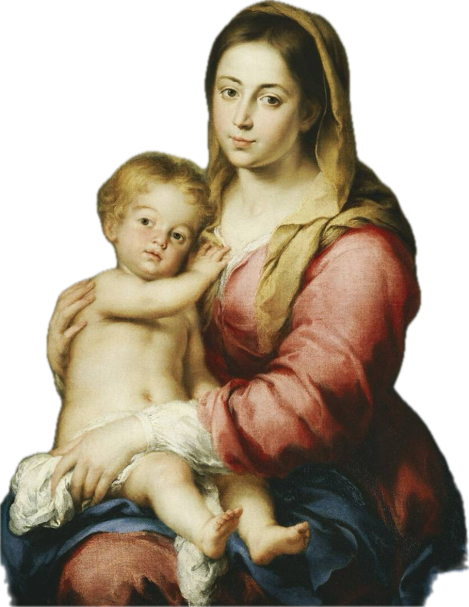

Manutenção do Colégio São José
Sustentamos a estrutura, o corpo docente e o funcionamento do colégio, garantindo um ambiente católico do berçário ao ensino médio.
A Arca Nossa Senhora da Providência mantém o Colégio São José e socorre famílias que desejam uma formação católica para seus filhos — confiando, em tudo, à Divina Providência.
A Arca Nossa Senhora da Providência é a associação mantenedora do Colégio São José, dedicada à educação cristã de crianças e jovens segundo a tradição da Igreja.
Sob a orientação espiritual da Fraternidade Sacerdotal São Pio X, reunimos pais, benfeitores e educadores em torno de um mesmo propósito: oferecer um ensino sólido, enraizado na fé, na virtude e no amor à verdade.
Nosso nome traduz nossa confiança: como a arca que abriga e protege, queremos acolher cada família — e, diante das dificuldades, entregar-nos inteiramente à Providência de Deus, por intercessão de Nossa Senhora.

“Buscai primeiro o Reino de Deus e a sua justiça, e todas estas coisas vos serão acrescentadas.”Mt 6, 33
Sustentamos a estrutura, o corpo docente e o funcionamento do colégio, garantindo um ambiente católico do berçário ao ensino médio.
Concessão de bolsas parciais a famílias que comprovem necessidade, segundo critérios socioeconômicos avaliados pela diretoria.
Acompanhamento espiritual de alunos e famílias, com catequese, retiros e a vida sacramental sob orientação da FSSPX.
Apoio material e humano às famílias em dificuldade, mobilizando benfeitores e voluntários em torno da caridade cristã.
Preencha o formulário de solicitação com os dados do responsável, dos alunos e a situação financeira da família. A comissão avaliadora analisa cada pedido com cuidado e responde dentro do prazo informado.
— a confirmar (endereço completo)
— a confirmar (horário)